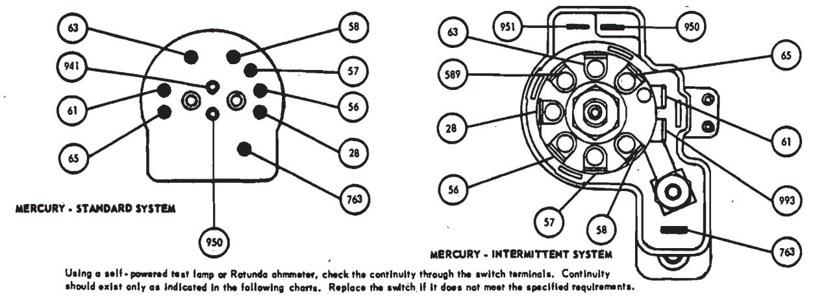
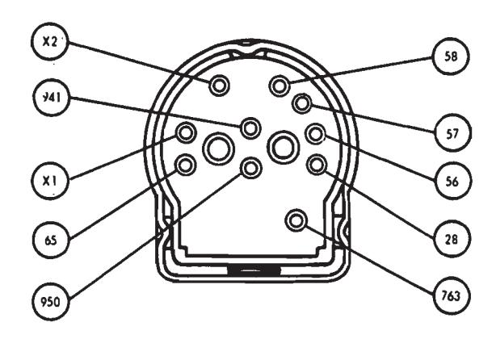
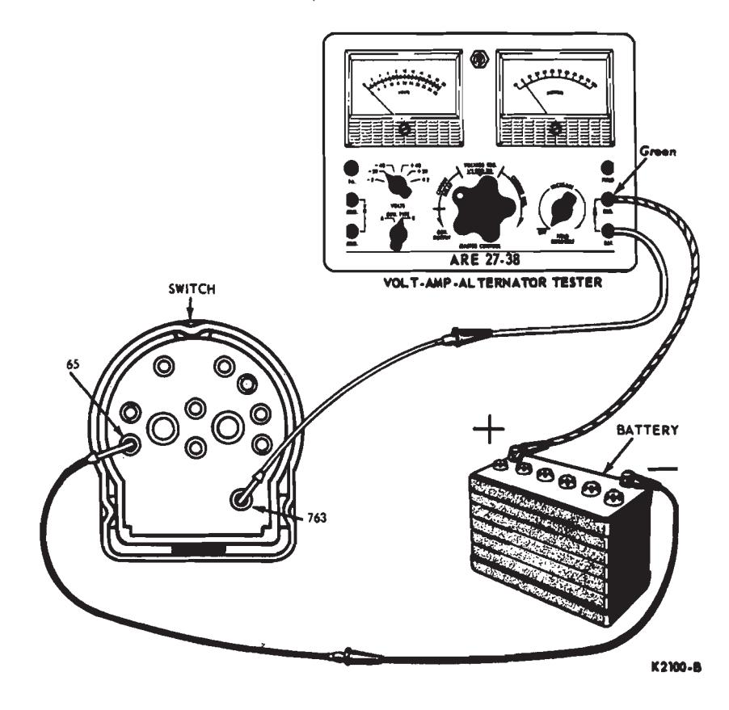
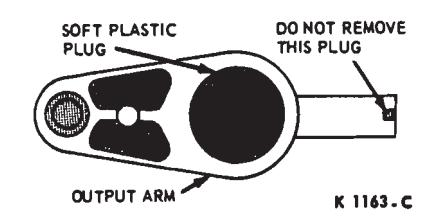
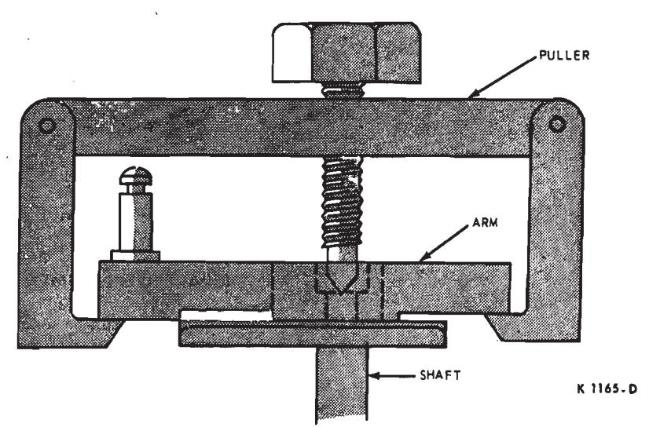
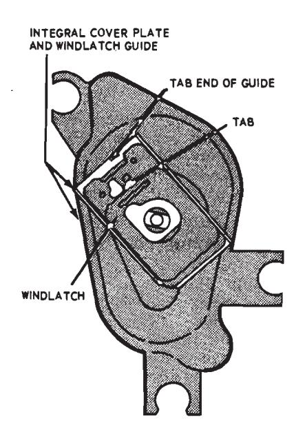
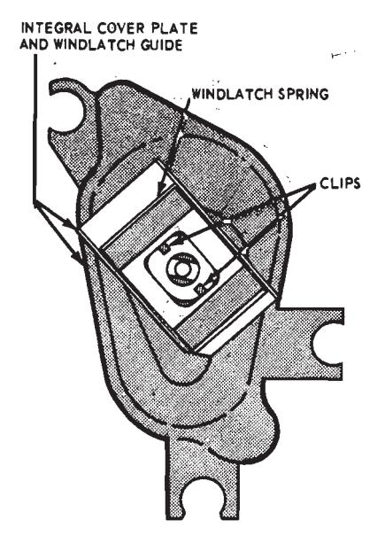

Windshield Wipers and Washers · 35-07-01
The wiper motor is a two-speed, permanent magnet depressed park type with the brush end plate at one end of the housing and a gear housing at the other end. The park switch is located in the gear cover and the park mechanism is located in the output arm.
The motor is mounted on the engine side of the dash panel under the left front fender. The links from the pivot shafts are not directly connected to the motor, but connect to the drive arm and pivot plate assembly on the inner side center of the dash panel. A drive arm from the pivot plate connects to the motor output shaft.
Motor Test Procedures
To perform the electrical tests, it will be necessary to remove the motor from the vehicle for access to the terminals. See Motor Removal and Installation.
The motor terminals are too small to make the necessary test connections without using connector sleeves and wires between the motor terminals and the test equipment as shown in Fig. 10. The connector sleeves (available in kit No. C4AZ-14294-8) should be crimped onto both ends of the wires.
Current Draw Test
Connect the positive (red) lead from the test equipment to the center terminal on the motor end plate, and connect the green lead from the tester to the battery positive post (Fig. 10). Connect a jumper wire from the battery negative post to the low speed terminal on the motor end plate and read the current draw. Move the jumper wire from the low speed terminal to the high speed terminal, and read the high speed current draw. In either case the current draw should not exceed 3/5 amperes. If the current draw does exceed 3.5 amperes, check the output arm and windlatch mechanism for binding or damage before replacing the motor.
Park Switch Test
Using the appropriate connector sleeves and wires, connect the park switch terminals to the motor terminals in the end plate and to the battery positive post as shown in Fig. 10. Ground the motor to the battery negative post as shown. With this hookup, the motor output arm should move in the following cycle: rotate in normal direction; reverse direction of rotation; and stop in park position. If the output arm does not cycle properly, replace the park switch.
Windshield Wiper Manual Control Switch Tests
Continuity Test
Check the continuity between terminals of the switch as shown in Figs. 11, 12 and 13. (As an alternate procedure plug a known good switch into the wiring harness and operate). If the switch is good, check the continuity of the wires and repair or replace the wiring as necessary. If continuity does not exist between all the terminals as indicated, replace the switch.
Circuit Breaker Test
Place the switch in off position and connect the variable resistance unit of a Rotunda Volt-Amp Tester as shown in Fig. 14. The Lincoln Continental switch is shown, but the Ford, Meteor and Mercury switches are connected in the same manner, all using terminals 65 and 763. See Figs. 11 and 12 for terminal identification.
Set the master control to maximum resistance position initially to prevent damage to the circuitry and ammeter.
Low Current Pass Test
Adjust the variable resistance until the ammeter indicates 8 1/4 amperes.
The ammeter should indicate the specified current for ten minutes. If the circuit will not indicate specified current for ten minutes (current drops to zero), replace the switch.
High Current Pass Test
Adjust the master control until the ammeter indicates 16 1/2 amperes. The circuit should open within 30 seconds (current drops to zero); otherwise the switch must be replaced.
Motor Removal and Installation
Disconnect the battery ground cable.
Remove the wiper arm and blade assemblies from the pivot shafts.
On Ford and Meteor, remove the cowl top grille (ten screws) for access to the linkage and electrical connections on the inner side of the dash panel. On Lincoln Continental, remove the left cowl screen (four screws) for access through the cowl opening. Disconnect the linkage drive arm from the motor output arm crankpin by removing the retaining clip. Disconnect the two (push-on) wire connectors from the motor.
From the engine side of the dash, remove the three bolts that retain the motor to the dash and remove the motor. If the output arm catches on the dash during removal, handturn the arm clockwise so that it will clear the opening in the dash.
Before installing the motor, be sure that the output arm is in park position as outlined under Moving Output Arm to Parked Position.
Using a self-powered test lamp or Ratunda chammeter, check the continuity through the switch terminals. Continuity should exist only as indicated in the following charts. Replace the switch if it does not meet the specified requirements.
| SWITCH POSITION | CONTINUITY BETWEEN TERMINALS | COLOR CODE OF WIRING TO WIPER SWITCH | SWITCH POSITION | CONTINUITY BETWEEN TERMINALS | COLOR CODE OF WIRING TO WIPER SWITCH |
|---|---|---|---|---|---|
| OFF (PARK) | 65 · 763 61 · 63 | 28 Black 56 Blue | OFF (PARK) | 28 - 56 61 - 63 | 28 Black 56 Blue |
| WIPER LOW/WASHER ON | 28 - 56 61 - 65 - 763 - 941 | 57-A Black 58 White | INTERMITTENT | 763 - 61 589 - 28 | 57 Black 58 White |
| HIGH | 56 • 57 • A 61 • 65 • 763 | 61 Yellow 63 Red 65 Green | LOW | 993 - 57 763 - 61 56 - 57 | 61 Yellow 63 Red 589 Orange |
| 57 • A • 58 | 763 Orange-White 941 Black-White | HIGH Washer on | 763 • 61 57 • 58 763 • 941 | 763 Orange-White 993 Brown-White K209 |
Fig. 11 — Wiper Switch Continuity Test Connections — Ford and Meteor

| SWITCH POSITION | CONTINUITY BETWEEN TERMINALS | COLOR CODE OF WIRING TO WIPER SWITCH | SWITCH POSITION | CONTINUITY BETWEEN TERMINALS | COLOR CODE OF WIRING TO WIPER SWITCH |
|---|---|---|---|---|---|
| OFF (PARK) | 763 - 65 61 - 63 28 - 56 | 28 Black 56 Blue 57 Black 58 White | OFF (PARK) | 763 - 65 28 - 56 61 - 63 | 28 Block 56 Blue 57 Block |
| LOW HIGH | 763 - 61 - 65 56 - 57 763 - 61 - 65 | 61 Yellow 63 Red 65 Green | INTERMITTENT | 763 - 61 - 65 28 - 589 57 - 993 | 58 White 61 Yellow 63 Red 65 Green |
| WASHER ON | 57 - 58 763 - 65 941 • 750 | 763 Orange - White 941 Black 950 White-Black | LOW | 763 - 61 - 65 56 - 57 | 589 Oronge 763 Orange-White |
| HIGH WASHER ON | 763 - 61 - 65 57 - 58 763 - 65 950 - 951 | 950 Green -Black 951 Green 993 Brown -White |
Fig. 12 — Wiper Switch Continuity Test Connections — Mercury

Using a Rotunda chammeter, check the continuity through the switch terminals. Continuity should exist only as indicated in the following chart. Replace the switch if it does not meet the specified requirements.
| SWITCH POSITION | CONTINUITY BETWEEN TERMINALS |
|---|---|
| OFF (PARK) | 65-763 28-56 X1-X2 |
| INTERMITTENT | 65-763 56-57 56-X2 X1-X2 ~ (100-900 ohms@lst detent and up to |
| LOW | 65-763 7000 ohms through 10 detents.) 56-57 56-X1-X2 |
| HIGH | 65-763 57-58 58-X1-X2 |
| WASHER ON | 941-950 |
Fig. 13 — Wiper Switch Continuity Test Connections — Lincoln Continental

Fig. 14 — Typical Wiper Switch Circuit Breaker Test Connections — Lincoln Continental Shown

Fig. 15 — Output Arm with Soft Plastic Plug Installed
Motor Parts Replacement
The wiper motor can be serviced as a complete assembly, but all parts can not be serviced. Removal and Installation procedures are given here for those parts that are serviced. To replace any of the following parts the motor has to be removed from the vehicle as outlined in the foregoing procedure.
Cover and Switch Assembly
Remove the four cover retaining screws and switch, inspect and replace parts if necessary. Be sure to tighten the cover screw that connects the park switch ground strap to the gear box.
Brush End Plate
Carefully observe the original position of the bale clip and pry it off with a screwdriver. Remove the end plate with plug and seal.
When installing the end plate, use a fine wire probe through the hub opening to fit the three commutator brushes into their holders.
Output Arm, Windlatch and Cover Plate
Removal
-
With a sharp pointed tool, puncture and pry off the soft plastic plug from the upper surface of the arm (Fig. 15).
-
Remove the retaining bolt from the shaft, being certain not to rotate the shaft.
-
Remove the arm from the shaft with a suitable puller (Fig. 16). Do not attempt to drift the arm from the shaft.
-
Note the correct positioning of the windlatch in its guide for proper reassembly (Fig. 17). Lift the plastic windlatch out of the integral cover plate and guide.
-
Unclip the windlatch spring from the guide and remove it (Fig. 18).

Fig. 16 — Removing Output Arm From Shaft with Puller

Fig. 17 — Windlatch Installation
Installation
- Snap the windlatch spring in place (Fig. 18).
- If the windlatch is not lubricated, apply Lubriplate to both sides of the windlatch. (Replacement units are supplied lubricated). Position the windlatch in the integral cover plate and guide as shown in Fig. 17.
- Position the arm and cam assembly on the shaft so that the locating marks are aligned (Figs. 19 and 20). Note that the service replacement arm (Fig. 20) comes with the cam pin engaged in the detent. Therefore, when installed with the correct camto-shaft relationship (marks aligned), the arm will be 180 degrees out of parked position. It will be returned to park position when you perform the final step of this procedure.
- Draw the arm and cam assembly onto the output shaft with the retaining screw, applying 8-10 ft-lbs of torque. Before tightening the screw, however, slide the windlatch in its guide to make sure that the upstanding tab clears the underside of the arm as it is being drawn onto the shaft.
- Install a new soft plastic plug (Fig. 15).
- Make sure that the output arm is in park position (Fig. 19) as outlined in the following procedure.
Moving Motor Output Arm to Park Position
Before attempting to install the motor in the vehicle, be sure that the output arm is in the park position as shown in Fig. 19. If it is not in park position as in the case of the service replacement (Fig. 20), proceed as follows:
- Place the motor on the left fender near the feed wires at the dash panel.
- Temporarily connect the motor to the feed wires (2 plugs).
- Ground the motor by connecting a jumper wire from the ground strap to the body.
- Move the control switch lever in the vehicle to operate the motor. The output arm and cam will move together in clockwise rotation.
- Allow the arm and cam to move at least one full revolution, and then move the control switch to off position. This action will actuate the parking switch which reverses the current flow in the motor causing the arm and cam to reverse direction of rotation. The arm now moves in a counterclockwise direction until it is stopped by the windlatch tab. The cam continues to turn independently of the arm forcing the pin to slide up the ramp and out of the cam detent. By the time the cam detent has moved 180 degrees from its pin, the cam action has caused a channel in the undersurface of the arm to completely engage the windlatch tab. At this point, the switch mechanism breaks the circuit stopping the motor. The arm is now in parked position (Fig. 20), and the motor is ready to be installed in the vehicle.
Pivot Shaft and Link Assembly Removal and Installation
Ford, Meteor and Mercury
Disconnect the battery and remove the wiper arm and blade assemblies from the pivot shafts as described in Section 1 of this part.
Remove the cowl top grille for access to the linkage connections.
The right pivot shaft and link assembly (on Mercury vehicles) has to be removed before the left assembly or the drive arm and plate assembly can be removed. Remove the three retaining screws at the right pivot shaft, and disconnect the right link from the plate assembly on the inner side center of the dash panel by removing the retaining clip. Lift the pivot and link assembly out of the cowl opening. Remove the three retaining screws at the left pivot shaft and disconnect the left link from the plate assembly by removing the retaining clip. Lift the left pivot and link out of the cowl opening.
The drive arm and plate is serviced as one assembly. Disconnect the drive arm from the motor (one clip), remove the four screws retaining the pivot plate assembly to the dash (center) and remove the entire assembly through the cowl opening.
On Mercury vehicles, install the drive arm and plate assembly first; then the left pivot shaft and link assembly; and, lastly, install the right pivot shaft and link. Tighten the pivot plate and pivot shaft assembly retaining bolts to 3-7 ft-lbs torque. When installing the linkage connecting clips, be sure to force the clip locking flange into locked position as shown in Fig. 21.
Lincoln Continental
Disconnect the battery and remove the windshield wiper arm and blade assemblies from the pivot shafts as described in Section I of this part. Remove the cowl screens for access to the linkage.
Disconnect the left linkage arm from the drive arm by removing the clip, remove the three bolts retaining the left pivot shaft assembly to the cowl, and remove the left arm and pivot shaft assembly through the cowl opening.
Disconnect the linkage drive arm from the motor crank pin by removing the clip, remove the three bolts that connect the drive arm pivot shaft assembly to the cowl, and remove the pivot shaft drive arm and right arm as an assembly.
When installing the pivot shaft assembly retaining bolts, tighten them to 3-7 ft-lbs torque. When installing the linkage connecting clips, be sure to force the clip locking flange into locked position as shown in Fig. 21.
Windshield Wiper Switch Removal and Installation
Ford and Meteor
Disconnect the battery and remove the two-piece cover from the steering column (2 screws).
To allow removal of the cluster trim cover, remove the radio, wiper, washer, interval, heater, and defogger switch knobs and the lighter element. Remove the screw that retains the PRND21 dial cable to the column and loosen the set screw that retains the cable pin in the shaft housing. Remove the retaining screws and cluster trim cover assembly.
Remove the two screws that retain the switch to the cluster, lower the switch, and disconnect the multiple connector and vacuum hose from the switch.
Mercury
Disconnect the battery. Remove the windshield wiper knob and bezel from the switch shaft. Remove the nut that retains the switch to the bracket. Lower the switch from behind the instrument panel, and disconnect the multiple connector and vacuum hoses from the switch.
Lincoln Continental
Disconnect the battery. Pull the knob and remove the retaining nut and gasket from the switch shaft. Lower the switch from behind the instrument panel and disconnect the multiple connector.